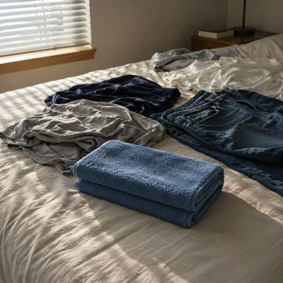

We pick up habits from other people all the time, often without realizing it. A particular way of folding a towel, a small gesture repeated until it becomes second nature. Years later, we may find ourselves doing the same thing without remembering where it came from.
“Into Thirds” is a quiet reflection on those little pieces of other people that remain with us. There's no dramatic revelation, no clear memory to unlock — just an ordinary Sunday, a blue towel, and a familiar motion that suddenly feels worth questioning. The habit carries on even when its origin has disappeared.
Perhaps the things we inherit without noticing are the ones that settle most deeply into our lives. We may never remember who taught us, or when we began. The towel gets folded anyway.
Sunday afternoon, laundry on the bed Afternoon light coming through the blinds I fold the blue towel into thirds again Didn't used to do it back then Some of my habits aren't even mine Just random pieces left behind Into thirds, not half, I don't know why Standing by the bed, I look at it twice I don't remember where I picked it up Or when it started feeling natural No big story, no dramatic place Just a tiny motion taking up space I stop for a second, look at my hands Trying to remember where it began I almost have it, then it slips away The towel is folded anyway Some of my habits aren't even mine Just random pieces left behind Into thirds, not half, I don't know why Standing by the bed, I look at it twice Into thirds Yeah... that's how I fold it